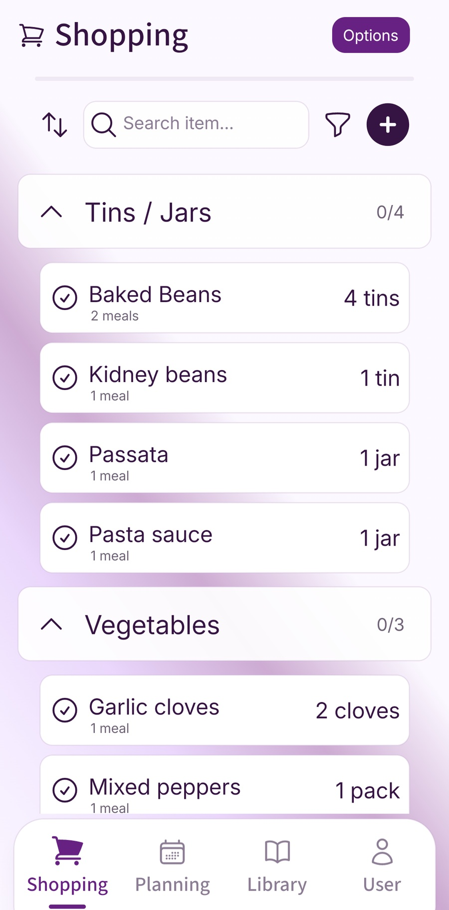

A half-used bag of spinach, the last few slices of bread and a container nobody can quite identify: food waste often starts with ordinary things getting lost in an ordinary week. A late finish changes dinner. Someone buys milk on the way home. The leftovers get pushed behind the yoghurt.
To reduce food waste at home, give the food you already buy a clearer place in the week. Check what gets wasted, make food that needs using easy to see, plan portions you can manage and check supplies before the next shop. You can start with one small change.
Choose one recurring problem for the next shop: a loaf you never finish, fresh ingredients bought for a meal you keep moving or a portion you intended to eat for lunch. Give that item a different plan and see whether it gets used.
Notice what your household keeps wasting
For a few days, make a quick note when food goes in the bin: what it was, roughly how much and why it was left. A note on your phone or a scrap of paper is enough. You might notice bread going mouldy, vegetables bought for a dinner that never happened or portions nobody wanted for lunch.
The reason helps you choose the next change. Bread might need a different buying or freezing habit. A bag of salad might need a definite meal. Repeated plate leftovers might mean serving a smaller first helping.
WRAP's Household Food Management Survey 2025, based on UK adults responsible for food shopping or preparation, examines habits such as judging quantities and buying the right amount. It is useful context, but your own notes will show which habits need attention in your kitchen.
Make food that needs using easy to see
Choose a visible place for food that needs attention: a small area of the fridge, a cupboard shelf or a short note on the meal plan. Keep chilled food in the fridge. Moving it into view should still respect its storage instructions and keep it separate from raw meat.
The Food Standards Agency recommends a fridge temperature of 0–5°C. Follow the packet's storage instructions, including what changes once it is opened. Keep raw meat, poultry and fish sealed on the bottom shelf, away from ready-to-eat food. See the FSA's chilling, freezing and defrosting guidance.
Check dates while you are there. Use-by dates concern safety; best-before dates concern quality. Do not eat food after its use-by date unless it was safely cooked or frozen on or before that date. A reassuring smell does not establish that use-by food is safe. Best-before food may still be usable after the date when stored correctly; check its condition and instructions. The government's food date-label guidance explains the distinction.
Make the note specific enough to act on: “spinach for tonight's pasta” is easier to follow than “use vegetables”. If a chilled ingredient will not fit into the plan, check whether it can be frozen while it is still safe.
Plan meals and portions for the week you have
Look at who will be home and how much cooking time you will have before choosing dinners. A busy Wednesday is a good place for a familiar quick meal. An evening out means one fewer dinner to buy for. Leave room to move a meal when something changes.
Start with a couple of ingredients that need using, then choose meals your household already eats. If half a bag of spinach can go into tonight's pasta, you may not need another fresh vegetable for that dinner. Keep the amount realistic rather than building an ambitious menu around every loose ingredient.
For portions, use the amount your household actually ate last time as a starting point. Write down whether you want dinner only or an extra lunch as well. You can offer smaller first helpings and let people ask for more, while keeping any unserved food suitable for safe storage.
For more help shaping the menu, use our guide to an adaptable weekly meal plan. The aim here is to give perishable ingredients a realistic opportunity to be eaten.
Give leftovers a specific next meal
Before you put an extra portion away, decide what it is for. “Monday lunch” gives a container a destination. If nobody will want it in time, consider freezing it promptly instead. Label it with the food and date so it is easier to recognise and choose later.
For general cooked leftovers, the FSA advises cooling them and getting them into the fridge within one to two hours, then eating them within 48 hours or freezing them if that will not be possible. Divide large amounts into smaller portions to help them cool. See the FSA storage guidance, and follow any food-specific instructions.
When reheating, heat the food until it is steaming hot throughout and reheat it only once. Reheat just the portion you intend to eat; stir microwave-heated food and follow the appliance or packet instructions. The FSA's leftovers guidance explains safe reheating.
Rice needs particular care: cool cooked rice quickly, ideally within an hour, refrigerate it and use it within 24 hours. Food Standards Scotland's food storage advice covers rice as well as other foods. The general 48-hour rule above should not be used for rice.
Frozen portions need a plan too. Follow the label's freezing and defrosting instructions. The FSA recommends defrosting in the fridge and using food within 24 hours of it being fully defrosted. Add a suitable portion to a future meal plan so it gets used.
Check supplies before you shop
Once you have chosen the meals, check the fridge, freezer and cupboards against the list. Cross off what is already there, allowing for how much the recipes need. Then add breakfasts, lunches and household essentials.
Tell the other shopper what you have changed. A current shared list is useful when one person notices the extra milk and someone else is already heading to the supermarket.
Consider pack sizes as well as shelf prices. A larger pack is useful when you have meals or safe storage planned for the rest. If it is likely to sit unused, a smaller pack or a different ingredient may fit the week better. Our budget family meal-planning guide explores how to make ingredients work across the week.
For the list itself, follow our meal-plan-to-shopping-list routine. A final supply check helps turn a list of recipe ingredients into the things you actually need to buy.
Try the spinach, bread and leftovers check
Here is how one household could turn a quick check into meals and a shorter shopping list. Use these examples with food that is still safe and has been stored correctly.
| What you find | A practical next action | What changes on the list |
|---|---|---|
| A partly used bag of spinach, still within its use-by and opening instructions | Use it in tonight's planned pasta meal, following the packet's preparation instructions. | Check whether that meal still needs the extra bag of greens you were going to buy. |
| Half a fresh loaf that the household will not finish | If suitable for freezing, wrap and freeze the slices you will not use, and label them. | Check those slices before adding another whole loaf. |
| An extra portion of vegetable chilli, without rice, from Sunday dinner | If cooled and refrigerated promptly, plan it for Monday lunch; follow the storage and reheating guidance above. | Remove the ingredients for the lunch it replaces, if they are no longer needed. |
The useful part is the connection between what you notice, what you will eat and what you buy next. A note that says “food to use” becomes much more useful when it names a meal and a day.
A short weekly food check
- Notice: What did we throw away, and what made it hard to use?
- Choose: Which two or three foods need a safe, realistic place in the next meals?
- Plan: Who is eating, how much do we need, and which leftovers have a destination?
- Shop: What is missing after checking the fridge, freezer and cupboards?
- Review: What small change would help with the food we keep wasting?
Pick one recurring problem for the next week. If it is bread, try buying or freezing an amount that suits your household. If it is abandoned dinners, plan fewer fresh meals and keep an appropriate backup. Keep the changes that make the routine easier to repeat.
Where Fameally fits into the routine
Fameally lets you save familiar meals, put them into a weekly plan and build the food shopping list from their ingredients. You can reuse a week that worked and adjust the meals when your schedule changes.

Before shopping, check the actual food at home against the list. The plan helps organise the decisions; you still check quantities, dates and storage. If your household wants to coordinate the plan and shop together, see how shared family planning works and check the current Family access details.
A few common questions
- What is a good first step for reducing food waste?
- Notice one food you repeatedly throw away and why. Then change the part of the routine that affects it: how much you buy, where you store it or when you plan to eat it.
- Should I buy less food or plan more meals?
- Check what is actually being eaten first. A more detailed plan helps only if it fits the household's week. Adjust the shop around meals and portions you are likely to use, leaving space for changes.
- How can I tell whether the routine is helping?
- Check whether the foods you repeatedly wasted are getting eaten, and whether you are buying fewer things you already have. Compare spending across similar weeks, allowing for price changes and different numbers of people eating at home.
- Do I need to track every cupboard item in an app?
- A quick manual check is a useful starting point. A short use-up note and a current shopping list may be enough; add more detail only when it helps you make decisions.
Sources checked
Food-safety guidance and the research below were checked on 22 October 2026.
- Food Standards Agency: best-before and use-by dates.
- Food Standards Agency: chilling, freezing and defrosting food safely.
- Food Standards Agency: cooking and using leftovers.
- Food Standards Scotland: safe food storage, including rice.
- WRAP: Household Food Management Survey 2025.
Keep planning
Give next week a clearer plan.
Save the meals your household enjoys, fit them into the week and build the shopping list from their ingredients.